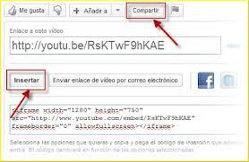

En una computadora, busca el video de YouTube que quieres incorporar, Haz clic en COMPARTIR Compartir debajo del video, Haz clic en Incorporar, Copia el código HTML del cuadro que aparece, Pega el código en el contenido HTML de tu blog o sitio web.
Nota: Si quieres incorporar videos de YouTube en tu sitio web o app dirigidos a niños, debes autoclasificarlos empleando estas herramientas. Esta acción evitará que Google publique anuncios personalizados en ese sitio o app, y también inhabilitará algunas funciones del reproductor incorporado. Los videos con restricción de edad no se pueden mirar en la mayoría de los sitios web de terceros. Cuando esos videos se reproduzcan, se redireccionará a los usuarios a YouTube. Recuerda que las Condiciones del Servicio de la API de YouTube y las Políticas para Desarrolladores se aplican al acceso al reproductor incorporado de YouTube y a su uso.
Accede a tu cuenta de YouTube desde una computadora. En el lado izquierdo de la página, selecciona la lista de reproducción que quieres incorporar. Copia el ID de la lista de reproducción desde la URL. Sigue estos pasos para modificar el código de incorporación de un video específico: Donde debería ir el ID de video (luego de “embed/”), escribe “videoseries?list=”. Luego, pega el ID de la lista de reproducción tras el signo “=”. Pega el código en el contenido HTML de tu blog o sitio web.
< iframe width="560" height="315" src="https://www.youtube.com/embed/videoseries?list=PLx0sYbCqOb8TBPRdmBHs5Iftvv9TPboYG" frameborder="0" allow="autoplay; encrypted-media" allowfullscreen>< /iframe>
